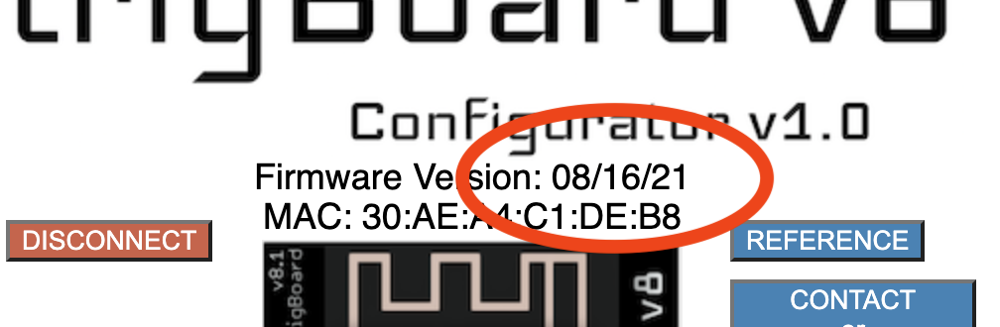
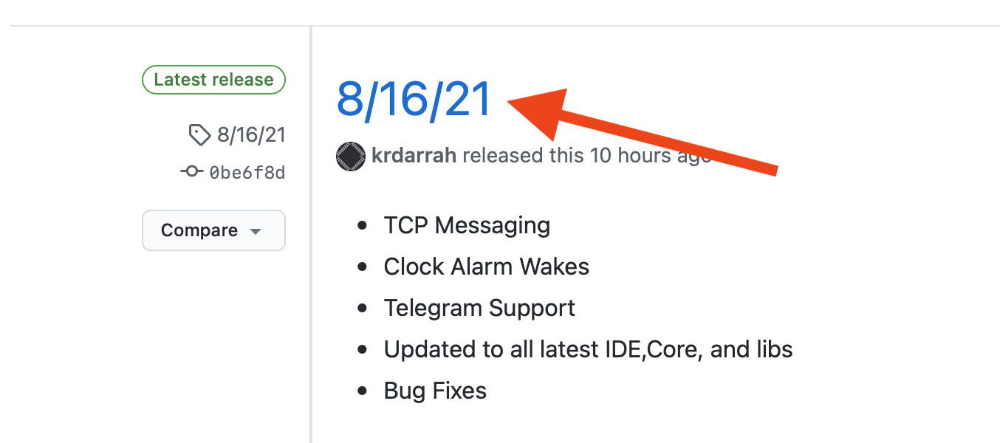
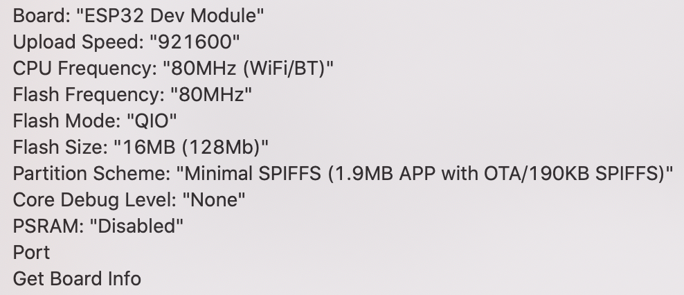

Firmware Updates & Programming¶
Check Version¶
Every trigBoard shipped is pre-programmed with a release of the base firmware, but this is under heavy development, so it is a good idea to first check to make sure you have the latest version loaded. Here’s how to check that:
Launch the Configurator Tool, hold the wake button on the trigBoard until the LED is flashing, then connect to the board from the Configurator. At the top of the page, you’ll see the date code of the firmware:
Head over to the releases git page and see if there is a newer date code:

If a newer version exists, don’t worry because it’s very easy to upload - even wirelessy using OTA (OVER THE AIR) updates
Wireless Updates (OTA)¶
Here is a quick video showing the complete process to update the Firmware using OTA:
Hint
The latest bin file can always be downloaded from the releases git page
The trigUpdater app for your OS can be downloaded from here
Alternate OTA Method¶
I also created an updater app with Python/Java, so here is that tutorial:
- The GUI can be downloaded here - you can download the entire zip, then just run the application for your operating system. You can download the latest BIN file from the Github Repository for the V8 Base Firmware inside the OTA folder
Warning
When using the GUI, you might get a pop-up about installing an old version of Java - just make sure to install the latest version and it should work
USB Updates¶
This is a long video showing how it can be done, but also useful for other ESP32 projects:
Compiling/Uploading Base Firmware¶
Latest code can always be found in the Github Repository
Boards are always shipped with the release code which can be found at the releases git page
Warning
Modifications to the base firmware are encouraged, but be careful that you fully understand the existing base firmware functionality. The firmware is responsible for both wake and shutdown functions.
Board Settings From Tools Menu
Warning
Custom Firmware¶
The trigBoard uses the popular ESP32 WiFi+Bluetooth module, which is great due to the extensive resources and support for this platform. The base firmware can be used as-is, but many users prefer to connect to their own service or do other unique things, while enjoying the ultra low power capability with the trigBoard. This is easy enough though, but is suggested to modify the base firmware and utilize the “low power engine”. Let’s review the void setup() function to see how custom code can be embedded (just note this may be slightly outdated, but all still applies)
void setup() {
pinMode(ESPlatchPin, OUTPUT);
digitalWrite(ESPlatchPin, HIGH);
pinMode(LEDpin, OUTPUT);
Serial.begin(115200);
checkWakeupPins();
loadConfiguration(filename, config);
rtcInit(config.timerCountDown, false);
Serial.println(getBattery(), 2);
if (pushLogic()) { //decide if push will occur or nt and what message will be
if (wiFiNeeded) {
if (connectWiFi()) {
pushOver();
pushSafer();
ifttt();
mqtt();
}
}
udp();
tcp();
}
killPower();
waitForButton();
initBluetooth();
}
In the loop, you’ll notice that not much happens. This is because the trigBoard is designed to only run the code in the setup, then go to sleep. If it ends up in the loop, means that the user held the wake button and it’s handling the bluetooth connection or an OTA (OVER THE AIR) firmware update. Because Pushover, Pushsafer, ifttt, etc are not used then you can just delete all of this out. Your setup may look like this then:
void setup() {
pinMode(ESPlatchPin, OUTPUT);
digitalWrite(ESPlatchPin, HIGH);
pinMode(LEDpin, OUTPUT);
Serial.begin(115200);
checkWakeupPins();
loadConfiguration(filename, config);
rtcInit(config.timerCountDown, false);
Serial.println(getBattery(), 2);
if (pushLogic()) { //decide if push will occur or nt and what message will be
//*** CUSTOM CODE GOES HERE **
}
killPower();
waitForButton();
initBluetooth();
}
This code here still works with the configurator, which is important since that’s how the wake events are setup. But how to use the wake message in the custom code? The message used to send push notifications is simply pushMessage which is just a character array. The trigBoard name set in the Configurator is config.trigName - also a char array. You experiment with this and Serial.print these out to the monitor so you can see how the message can be formatted.
Something else that is extremely useful is using the unused Configurator settings for other things - for example, since now you’re not using Pushover, Pushsafer, etc… you can enable those in the Configurator and set values there too be used in your custom code. Like if you need to add an API key to your custom code, just use the Pushover API key config.pushAPIKey.